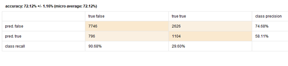

Caso estudio: Adopciones en un refugio de Austin
Objetivo: El objetivo de este caso de estudio es lograr predecir la probabilidad de que una persona posea una enfermedad cardiaca.
El estudio es realizado en el marco del proceso CRISP-DM:

Comprension del negocio
Se desea analizar los datos de ingresos y salidas del Refugio de Animales de la ciudad de Austin, para comprender las tendencias de adopción de animales, incluyendo qué atributos de estos animales resultan en una probabilidad de adopción mayor. El objetivo final es predecir si un cierto animal será adoptado o no, basado en las características que el Refugio de Animales de Austin puede identificar en el momento del ingreso. Este problema es importante porque aproximadamente 6.5 millones de animales ingresan a los refugios anualmente. Más aún, cada año 1.5 millones de animales de los refugios son sacrificados.
Comprension del negocio
Tenemos dos datasets uno de datos de los animales cuando entran y otro cuando salen. Los datos son los siguientes:
Procesamiento de los datos
Dataset "Intakes"
| Atributo | Tipo de datos original de la base de datos |
|---|---|
| animal_id | Texto |
| name | Texto |
| datetime | datetime |
| monthyear | datetime |
| found_location | Texto |
| intake_type | Texto |
| intake_condition | Texto |
| animal_type | Texto |
| sex_upon_intake | Texto |
| age_upon_intake | Texto |
| breed | Texto |
| color | Texto |
Dataset "Outcomes"
| Atributo | Tipo de datos original de la base de datos |
|---|---|
| animal_id | Texto |
| name | Texto |
| datetime | datetime |
| monthyear | datetime |
| date_of_birth | Texto |
| outcome_type | Texto |
| outcome_subtype | Texto |
| animal_type | Texto |
| sex_upon_outcome | Texto |
| age_upon_outcome | Texto |
| breed | Texto |
| color | Texto |
Tratamiento previo de los datos
Se adoptan principalmente perros. Lo cual es normal puesto que el refugio recibe principalmente perros.
Total, Perros Adoptados 2823/9509
Total, Gatos Adoptados 904/2461
Lo cual nos da un animal de preferencia son los gatos.
Podemos observar también que la principal edad en la que se adopta es al año con 641 adopciones.
Preparacion de los datos
Las decisiones que se tomaran para trabajar sobre los mismos son:
- Convertir sex a sex y castrated por separado: Se dividirá la columna "sex" en dos columnas separadas, una para el sexo y otra para indicar si el animal está castrado.
- Definir atributo adoptado como label: El atributo "adopted" se definirá como la etiqueta que se quiere predecir en el modelo.
- Sacar monthyear que es la mismo que date: La columna "monthyear" que es idéntica a la columna "date" se eliminará para evitar redundancia.
- Eliminar atributos innecesarios: Se eliminarán las columnas que no aportan al modelo y no se necesitan para el análisis.
- Asignar role id a animal_id: La columna "animal_id" se asignará como el identificador único (ID) del animal.
- Eliminar duplicados: Se eliminarán las filas duplicadas en el dataset.
- Generar clase Adopted: Se creará una nueva columna llamada "Adopted" donde se marcarán las filas donde [outcome_type] sea igual a "Adoption" y [outcome_subtype] no sea igual a "Foster".
Todo esto se hace con turboprep sin ningún operador en específico. Las columnas se remueven en transform remove. Las seleccionadas fueron principalmente las que no aportaban al modelo
Modelado
Comparacion ROCs
- Regresión Logística (RL): Se utilizará el modelo de Regresión Logística para clasificar los datos.
- K-Nearest Neighbors (KNN): El modelo K-Nearest Neighbors se empleará para la clasificación basada en vecinos más cercanos.
- Naive Bayes (NB): Se aplicará el modelo Naive Bayes para la clasificación de datos.
El modelo para utilizar es el siguiente:
Cada cross validation posee un modelo.También se realizará feature selection para cada modelo.
Evaluacion
RL
FS
NB
FS

KNN
FS

Algo a destacar es lo siguiente:
Se puede ver que a pesar de realizar el mismo foward selection, cada vez tomo atributos diferentes, aunque con algunas coincidencias. Esto se debe a que el algoritmo es avido, es decir que todo depende de donde tenga el punto de origen.